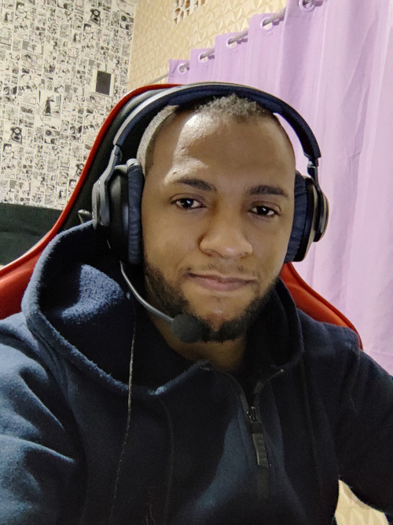
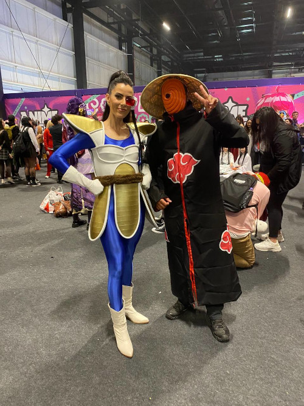
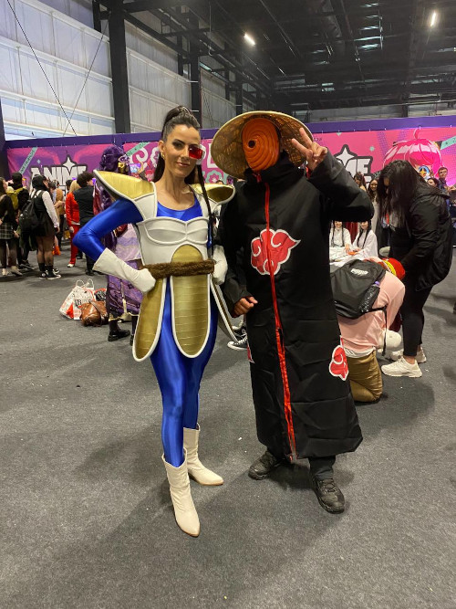
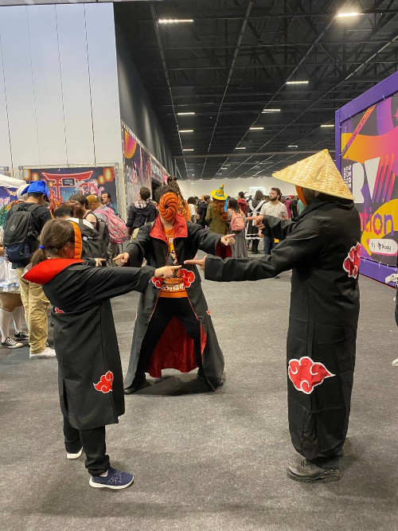
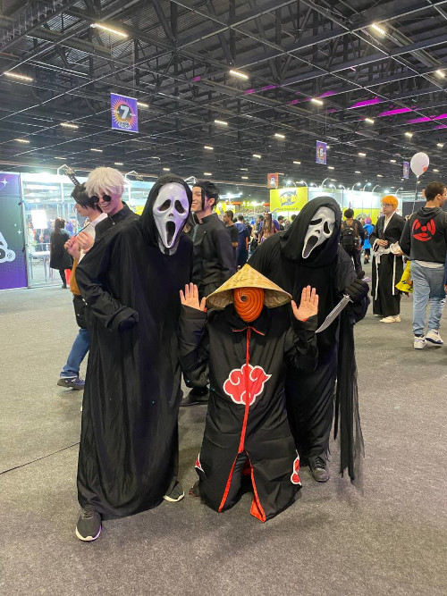
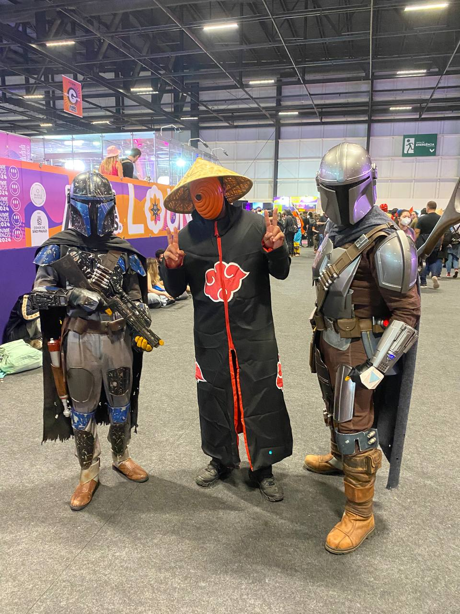
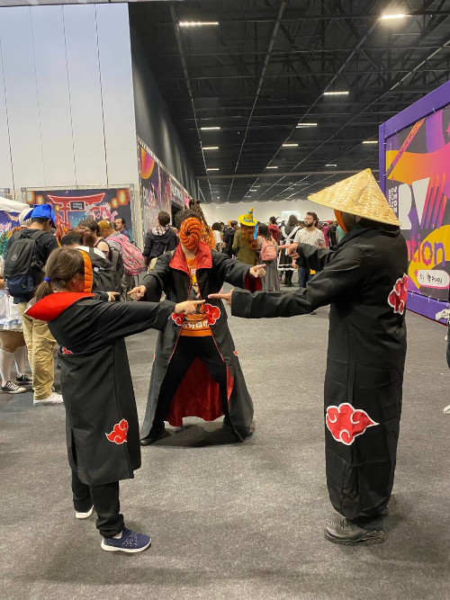
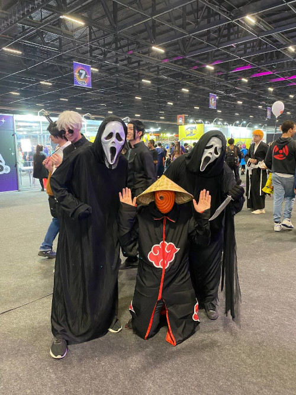
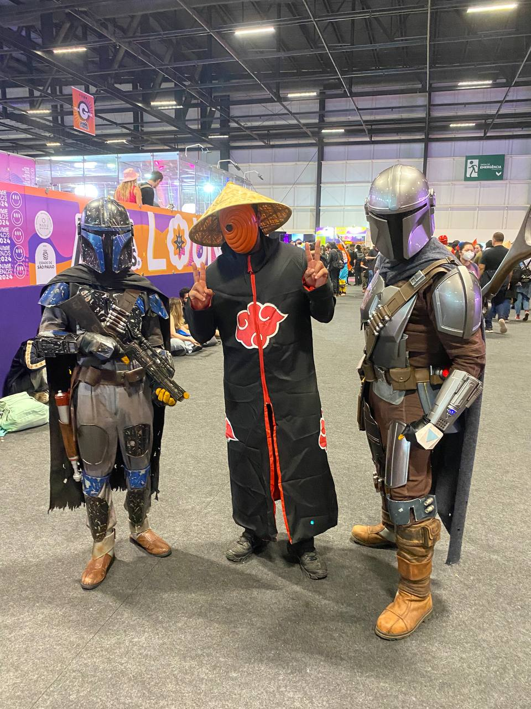

Quem sou eu?
Meu nome é Anderson Silva e não (Não luto MMA) 😅 Tenho 30 anos, sou apaixonado por animes, tecnologia e games. Nasci em 1994 e cresci assistindo obras como: Os Cavaleiros do Zodíaco, Dragon Ball Z, Yu Yu Hakusho, Bleach e Naruto.
Algumas das minhas primeiras lembranças são sobre discutir com meus irmãos sobre quem era o cavaleiro de bronze mais forte, levantar as mãos para ajudar o Goku a fazer a "Genki Dama" ou de meu pai fazer uma pausa no trabalho (ele era mecânico) para assistir o Goku se transformar em "Super Saiyajin".
Quando estive no Anime Friends tive a oportunidade de conhecer pessoas que gostam de animes tanto quanto eu. Revivi muito memórias da minha infância, vi personagens incríveis e cantar músicas muito nostálgicas ao som de Monte Cristo - Coral e Orquestra.
Veja abaixo algumas do Anime Friends 2024


 

 




